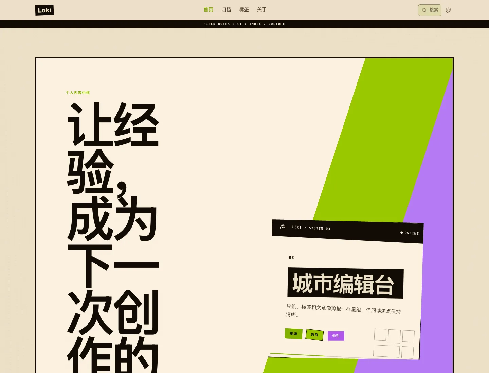
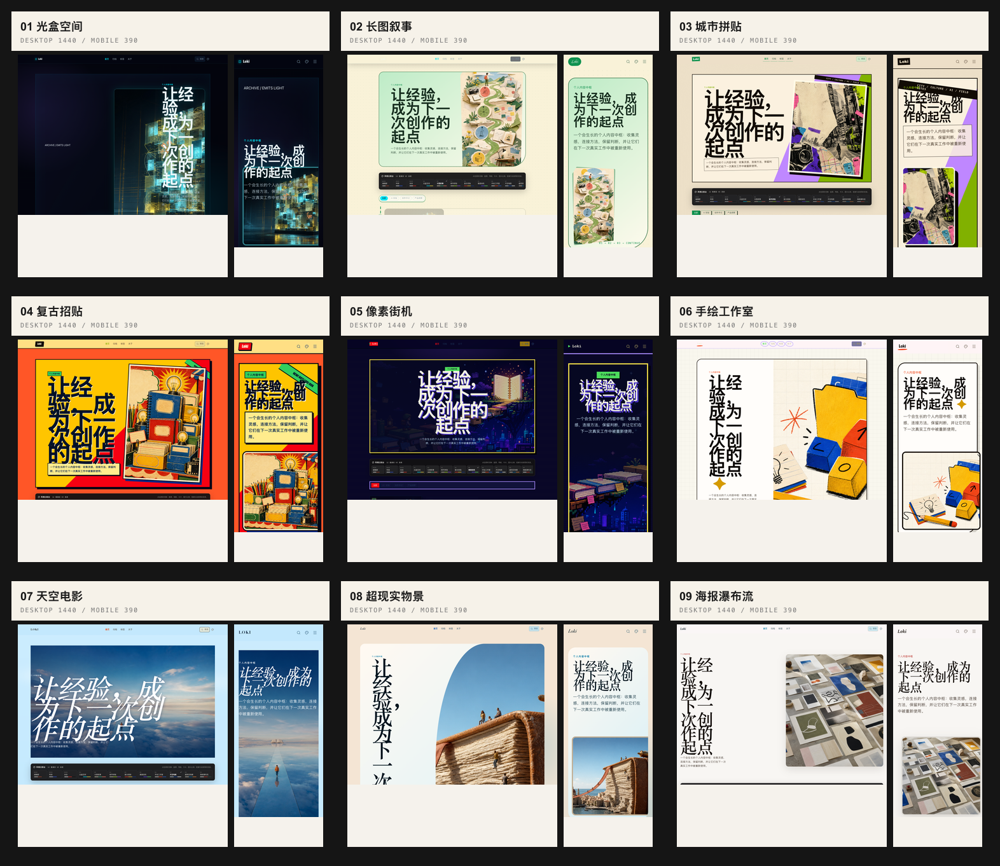
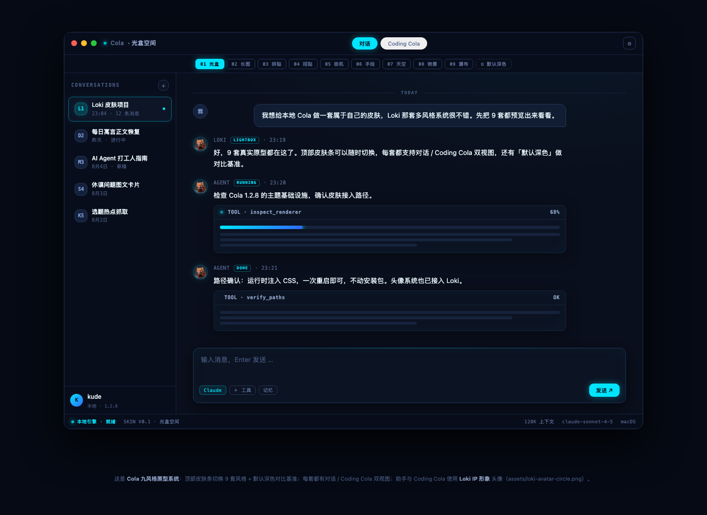
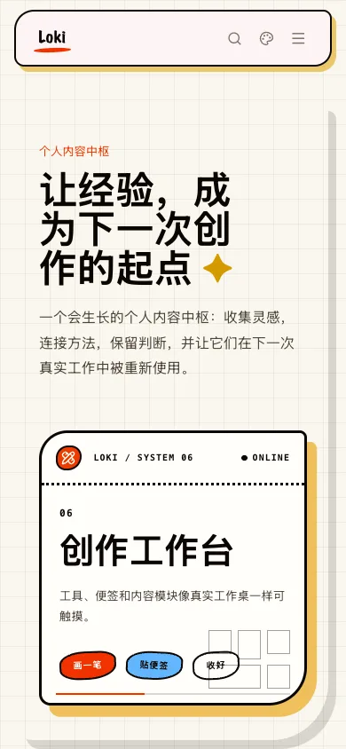

所以标题、入口、文章密度、移动端顺序和阅读动作都跟着内容重新编排。
前段时间我从换颜色开始。结果发现，颜色只是最表面的一层，真正麻烦的是菜单、弹窗、输入区，以及更新以后还能不能恢复。

所以标题、入口、文章密度、移动端顺序和阅读动作都跟着内容重新编排。
后来才发现，信息密度、视觉重心和交互顺序更影响我愿不愿意一直用。
菜单、弹窗、输入区和文件选择器都要清楚、能点、可恢复。
我会继续做前端注入、交互修复和版本恢复，直到真机上的按钮也能用。

九套表面对应不同照度、任务密度和工作状态。
页面为内容改变节奏，真实文章继续进入阅读现场。
人物气质被翻译成任务卡、菜单、弹窗与输入区规则。
如果只用一句话说：Loki 的个人化界面系统把高频 AI 工具改成可切换、可回退的个人工作空间。项目从 CSS token、明暗模式和稳定类名出发，通过运行时注入完成 Cola 1.2.8 真机验证，重点处理可读性、进程生命周期与更新回退。
不改数据库、消息数据和 Agent 逻辑；从视觉 token、稳定类名和运行时表面进入。
光盒、城市拼贴、天空电影使用同一组内容。我只换风格系统，这样才能看清结构到底改了什么。
只改变量不够：部分 Tailwind 工具类仍硬编码颜色，必须同时为明暗模式补可读性兜底。
新版 Electron 需要 remote allow origins；注入脚本还需脱离应用进程树，避免 Cola 退出时一并终止。
真实工作内容在展示层脱敏。拼贴负责带路，真机工作区、结构原型和移动端阅读现场各自说明能看见的那一部分。


